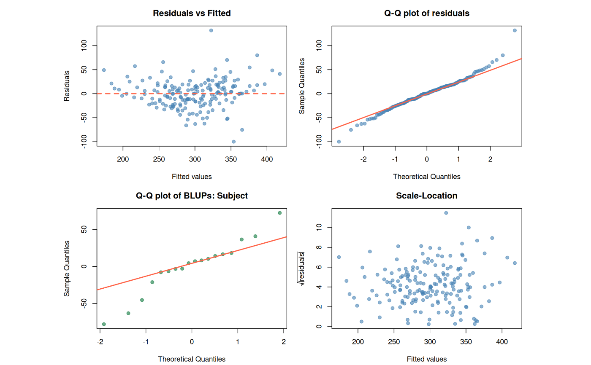

Fit a linear mixed model with lme4::lmer() including assumption checks, diagnostics, R-squared and post hoc tests.
f_lmer.RdFits a linear mixed-effects model using lme4::lmer() (with p-values
from lmerTest) and produces a fully-formatted report containing
the fixed-effects table, random-effects variance components, model-fit
indices (AIC, BIC, logLik, marginal & conditional R\(^2\)), residual and
BLUP diagnostics, convergence / singular-fit warnings, and post hoc
comparisons (emmeans) on factor fixed effects. Results can be
returned to the console or written to 'pdf', 'Word' or 'Excel'.
Usage
f_lmer(
formula,
data = NULL,
REML = TRUE,
ddf = "Satterthwaite",
alpha = 0.05,
adjust = "sidak",
norm_plots = TRUE,
post_hoc = TRUE,
intro_text = TRUE,
output_type = "default",
save_as = NULL,
save_in_wdir = FALSE,
close_generated_files = FALSE,
open_generated_files = interactive(),
...
)Arguments
- formula
A two-sided formula passed to
lme4::lmer(), e.g.y ~ treatment + time + (1 | subject)ory ~ treatment * time + (1 + time | subject). The right-hand side must contain at least one random-effects term in the(varying | grouping)syntax. See Details for a guide to reading the random-effects syntax in study-design terms.More than one response variable can be supplied on the left-hand side using
+(e.g.y1 + y2 ~ treatment + (1 | subject)). A separate model is then fit for each response, sharing the same right-hand side, and a multiple-testing warning is added to the report. See the Multiple Testing Across Response Variables section.- data
A data frame containing the variables in the model.
- REML
Logical. If
TRUE(default), the model is fit with restricted maximum likelihood, which gives less biased variance component estimates and is the appropriate choice for inference on fixed effects with Kenward-Roger or Satterthwaite degrees of freedom. Set toFALSEonly when comparing nested models that differ in their fixed-effects structure.- ddf
Character. Method for computing denominator degrees of freedom for fixed-effects p-values. One of:
"Satterthwaite"(default) Fast and accurate for most designs. Provided by
lmerTest."Kenward-Roger"Considered the gold standard, especially for small samples and unbalanced designs. Slower, and requires the
pbkrtestpackage."lme4"No p-values; only t-statistics are reported. Equivalent to a plain
lme4::lmer()summary.
- alpha
Numeric. Significance level for the fixed-effects table and the post hoc tests. Default is
0.05.- adjust
Character. Method used to adjust p-values for multiple pairwise comparisons in the post hoc step (passed to
emmeans::emmeans()). One of"sidak"(default),"tukey","bonferroni","fdr","none".- norm_plots
Logical. If
TRUE(default), diagnostic plots (residuals vs fitted, Q-Q of level-1 residuals, Q-Q of random-effect BLUPs, scale-location) are included in the output.- post_hoc
Logical. If
TRUE(default), runsemmeans::emmeans()pairwise comparisons only when the linear mixed model finds a significant fixed-effect term (ANOVA p-value belowalpha). The post hoc is performed on each significant factor fixed-effect term separately. Numeric covariates are skipped because their slope is already reported in the fixed-effects coefficient table; pairwise contrasts are not meaningful for a continuous predictor. If no fixed-effect term is significant, no post hoc is run.- intro_text
Logical. If
TRUE(default), prepends an explanation of LMM assumptions and the random-effects syntax linked to study design.- output_type
Character. Output format. One of:
"default": returns thef_lmerobject; auto-prints if unassigned."console": forces immediate printing."pdf","word","excel": writes a file."rmd": stores the raw markdown string in the returned object for embedding in an R Markdown chunk with{r, echo=FALSE, results='asis'}.
- save_as
Character. Output file path. See
f_aovfor the resolution rules; default isfile.path(tempdir(), "<dataname>_lmer_output.<ext>").- save_in_wdir
Logical. If
TRUE, save in the working directory instead oftempdir(). DefaultFALSE.- close_generated_files
Logical. Closes any open Word or Excel files before writing. Cross-platform (Windows taskkill, macOS / Linux pkill). Default
FALSE. WARNING: save your work first.- open_generated_files
Logical. Whether to open the generated output files after creation. Defaults to
TRUEin an interactive R session andFALSEotherwise (e.g. in scripts or automated pipelines). Set toTRUEorFALSEto override this behaviour explicitly.- ...
Additional arguments forwarded to
lmer. The argumentssubset,na.action, andweightsare handled specially: when supplied, they are applied viamodel.frameonce before the per-response loop, so every response in a multi-response call is fitted on the identical row set. Otherlmer()arguments (e.g.control = lmerControl(...),contrasts,offset) are forwarded unchanged on every fit.
Value
An object of class f_lmer: a named list containing the
fitted lmerModLmerTest model, the ANOVA-style fixed-effects
table, the variance components and ICC, the R\(^2\) values, the
observed descriptives table (raw-data n, mean, sd, se, min, Q1,
median, Q3, max grouped by the categorical fixed-effect predictors),
post hoc results (if any), diagnostic plots, and convergence
diagnostics. When more than one response variable is supplied on the
left-hand side, these elements are nested one level deep under each
response name, e.g. out$y1$fixed_effects,
out$y2$fixed_effects. When output_type = "rmd" the
markdown string is stored in $rmd.
Details
What is a linear mixed model?
A linear mixed model (LMM) extends ordinary regression / ANOVA by
allowing two kinds of effects:
Fixed effects - factors you actively manipulated or whose specific levels you care about (treatment, dose, time, genotype). Reported as estimates with confidence intervals.
Random effects - grouping structure that creates non-independence in your data but whose levels are a random sample from a larger population (subjects measured repeatedly, plots within fields, observers, batches). Reported as variance components.
Use an LMM whenever observations share something that makes them more
alike than two random observations from the dataset. Ignoring such
grouping (running a plain aov or lm) is
pseudoreplication, i.e. treating non-independent observations
as if they were independent: standard errors shrink, p-values shrink,
false positives explode.
Vocabulary.
Before going further, a few terms used throughout the report:
Subject - the experimental unit that is measured repeatedly (a person, animal, pot and plot, cell line); in
lme4syntax it is the grouping factor on the right of the|, e.g.(1 | subject).Within-subject factor - a predictor whose levels vary within the same subject (time in a longitudinal study, treatment in a cross-over study).
Between-subject factor - a predictor whose levels vary across subjects but are constant within a subject (sex, genotype, treatment arm in a parallel-groups trial). Both within- and between-subject factors are fixed effects.
BLUP - Best Linear Unbiased Predictor. The model's estimate of the random-effect value for each subject (e.g. how much a particular subject deviates from the population intercept). BLUPs are checked for normality just like residuals.
ICC - intraclass correlation coefficient. The share of total variance attributable to between-group differences. ICC = 0 means the grouping factor is irrelevant; ICC = 1 means observations within a group are identical.
REML - restricted maximum likelihood. The default fitting method for variance components; gives less biased estimates than ordinary maximum likelihood.
Satterthwaite / Kenward-Roger - methods to approximate the denominator degrees of freedom for fixed-effect p-values, since there is no exact df in an LMM.
Reading the (1 | group) syntax.
Every random-effects term has the form ( <varying> | <group> ).
The bar reads as "varies by". The grouping factor on the right is what
creates the non-independence. The left side is what is allowed to differ
between groups. Common patterns:
(1 | subject)- random intercept per subject (each subject has its own baseline). Repeated measures, longitudinal data.(1 | field)- randomised block design or multi-site trial; one intercept per block.(1 | field/plot)-plotnested infield; equivalent to(1|field) + (1|field:plot). Split-plot or hierarchical sampling.(1 + time | subject)- random intercept and random slope oftimeper subject. Subjects differ both in baseline and in how fast they change. Growth curves.(1 | subject) + (1 | observer)- crossed random effects: every observer can rate every subject. Inter-rater designs.
Rule of thumb: if you can answer "if I duplicated this
experiment, would I draw new levels of this factor?" with yes,
it belongs on the right of a |. If you would re-use the exact
same levels (e.g. control vs treated) it is a fixed effect.
When to use a linear mixed model.
The most common reason is a repeated-measures design, in
which the same experimental units are measured on more than one
occasion or under more than one treatment. Compared with a
between-groups design analysed by plain ANOVA this gives two real
advantages: fewer experimental units are needed (each subject acts
as its own control, removing between-subject variation from the
comparison) and individual differences cannot bias the treatment
groups (in a cross-over design every subject receives every
treatment). Two canonical examples:
Longitudinal study - same subjects measured at several time points:
y ~ time + (1 | subject). If subjects also differ in how fast they change, add a random slope:y ~ time + (1 + time | subject).Cross-over design - every subject receives every treatment in sequence:
y ~ treatment + (1 | subject). If carry-over between periods is a concern, addperiodas a fixed effect.
LMMs also apply to non-repeated structures that still create non-independence: randomised block designs, split-plot trials, multi-site studies, inter-rater designs.
Assumptions of a linear mixed model:
Linearity in the parameters of the fixed-effects part.
Independence of observations conditional on the random effects. If structure remains (e.g. temporal autocorrelation), more random effects or a correlation structure are needed.
Normality of level-1 residuals (Q-Q plot of
residuals(m)).Normality of the random-effect BLUPs (Q-Q plot of
ranef(m)). This is the assumption most users forget.Homoscedasticity: residual variance roughly constant across fitted values and across grouping levels.
At least
~5levels of each grouping factor; with3-4levels it is usually better to treat the factor as fixed.
If Levene's test or the Shapiro-Wilk tests on residuals or BLUPs indicate a violation, the report adds a Recommendations for Heteroscedasticity and/or non-normal residuals section after the diagnostics with concrete next steps (generalised mixed model, transformation).
Convergence and singular fits.f_lmer surfaces lme4 convergence warnings and the
"boundary (singular) fit" message prominently in the output. A singular
fit usually means the random-effects structure is too complex for the
data (often a random slope with too few levels) - simplify the model
before interpreting results.
This function requires Pandoc (>= 1.12.3) for pdf, word
and rmd output. See f_aov for installation notes.
Multiple Testing Across Response Variables
When several response variables are analysed in a single call
(e.g. y1 + y2 + y3 ~ treatment + (1 | subject)), each linear
mixed model is an independent null-hypothesis test at level
alpha. The post hoc adjustments (adjust = "sidak",
"tukey", etc.) only control the family-wise error rate
within one model (across pairwise contrasts for that
response). They do not protect against the inflation of
Type I error across the set of responses.
Practical implication: With \(k\) independent response variables all tested at \(\alpha = 0.05\), the probability of obtaining at least one false positive is \(1 - (1 - 0.05)^k\), which reaches ~40% for \(k = 10\).
When this matters: The risk is highest in exploratory studies where many responses are screened simultaneously without a clear a priori hypothesis for each one. It is less of a concern when each response is a pre-specified primary outcome with its own biological rationale.
Possible remedies:
Bonferroni correction across responses: use
alpha = 0.05 / kwherekis the number of response variables. Conservative but simple.False Discovery Rate (FDR): apply
p.adjust(p_values, method = "fdr")to the vector of per-response fixed-effect p-values after the fact.Multivariate model: if the responses are correlated and you want a single omnibus test, fit a joint multivariate mixed model (e.g.
MCMCglmm,brms) before interpreting individual responses.Pre-registration: declare primary vs. exploratory responses before data collection to justify differential correction thresholds.
Author
Sander H. van Delden plantmind@proton.me
Examples
# sleepstudy: reaction time vs days of sleep deprivation,
# repeated measures within Subject (ships with lme4).
data(sleepstudy, package = "lme4")
# 1) Random intercept per subject - the simplest mixed model.
# Each subject has its own baseline reaction time; the fixed
# effect of Days is the average slope across subjects.
# With output_type = "default" (the default), the result auto-
# prints if not assigned, so no print() call is needed.
f_lmer_out <- f_lmer(Reaction ~ Days + (1 | Subject),
data = sleepstudy)
# Re-print the stored result and show the diagnostic plots.
print(f_lmer_out)
#>
#> ==========================================================
#> Linear Mixed Model (f_lmer)
#> ==========================================================
#>
#> Formula: Reaction ~ Days + (1 | Subject)
#>
#> --- Fixed-effects table ---
#>
#> ------------------------------------------------------------------------------
#> Term Sum Sq Mean Sq NumDF DenDF F value Pr(>F) Sig
#> ------ ------------ ------------ ------- ---------- ---------- --------- -----
#> Days 1.6270e+05 1.6270e+05 1 161.0000 169.4014 < 0.001 *
#> ------------------------------------------------------------------------------
#>
#>
#> --- Random-effects variance components ---
#>
#> ----------------------------------------------
#> Group Term Variance Std
#> Dev
#> ---------- ------------- ----------- ---------
#> Subject (Intercept) 1378.1785 37.1238
#>
#> Residual 960.4566 30.9912
#> ----------------------------------------------
#>
#>
#> --- Model fit ---
#>
#> ------------------------------------------------------
#> Var(group) Var(resid) ICC R² marg R² cond
#> ------------ ------------ -------- --------- ---------
#> 1378.1785 960.4566 0.5893 0.2799 0.7043
#> ------------------------------------------------------
#>
#> - Var(group) / Var(resid): between-group and residual variance components.
#> - ICC = Var(group) / [Var(group) + Var(resid)]: share of total variance
#> attributable to between-group differences (0 = grouping irrelevant; 1 =
#> within-group observations identical).
#> - R² marg.: variance explained by the fixed effects alone (Nakagawa &
#> Schielzeth).
#> - R² cond.: variance explained by fixed + random effects together. The gap
#> is the variance absorbed by the random-effects structure.
#>
#> --- Information criteria ---
#>
#> ------------------------------------------------------------
#> AIC BIC logLik REML criterion df
#> residual
#> ---------- ---------- ---------- ---------------- ----------
#> 1794.465 1807.237 -893.233 1786.465 176
#> ------------------------------------------------------------
#>
plot(f_lmer_out)

# 2) Random intercept AND random slope of Days per subject,
# fitted with Kenward-Roger denominator df, saved to MS Word.
f_lmer(Reaction ~ Days + (1 + Days | Subject),
data = sleepstudy,
ddf = "Kenward-Roger",
output_type = "word"
)
#> Saving output in: /tmp/RtmpG5HCTF/sleepstudy_lmer_output.docx
# 3) A factor fixed effect triggers a post hoc test.
# Bin Days into three sleep-deprivation phases so that the
# fixed effect is categorical and emmeans pairwise comparisons
# with a compact letter display are produced automatically.
sleepstudy$Phase <- cut(sleepstudy$Days,
breaks = c(-Inf, 2, 6, Inf),
labels = c("early", "mid", "late"))
f_lmer(Reaction ~ Phase + (1 | Subject),
data = sleepstudy,
adjust = "tukey")
#>
#> ==========================================================
#> Linear Mixed Model (f_lmer)
#> ==========================================================
#>
#> Formula: Reaction ~ Phase + (1 | Subject)
#>
#> --- Fixed-effects table ---
#>
#> ------------------------------------------------------------------------------
#> Term Sum Sq Mean Sq NumDF DenDF F value Pr(>F) Sig
#> ------- ------------ ------------ ------- ---------- --------- --------- -----
#> Phase 1.4485e+05 7.2427e+04 2 160.0000 67.1861 < 0.001 *
#> ------------------------------------------------------------------------------
#>
#>
#> --- Observed descriptives (by fixed-effect factor levels) ---
#>
#> -----------------------------------------------------------------------------------------
#> Phase n mean sd se min Q1 median Q3 max
#> ------- ---- --------- -------- ------- --------- --------- --------- --------- ---------
#> early 54 262.170 31.367 4.268 194.332 239.596 266.955 283.853 326.878
#>
#> mid 72 298.085 50.501 5.952 204.707 268.572 288.911 329.637 454.162
#>
#> late 54 335.410 59.855 8.145 217.727 304.810 347.198 368.485 466.353
#> -----------------------------------------------------------------------------------------
#>
#>
#> --- Random-effects variance components ---
#>
#> ----------------------------------------------
#> Group Term Variance Std
#> Dev
#> ---------- ------------- ----------- ---------
#> Subject (Intercept) 1366.4232 36.9652
#>
#> Residual 1078.0099 32.8331
#> ----------------------------------------------
#>
#>
#> --- Model fit ---
#>
#> ------------------------------------------------------
#> Var(group) Var(resid) ICC R² marg R² cond
#> ------------ ------------ -------- --------- ---------
#> 1366.4232 1078.0099 0.5590 0.2487 0.6687
#> ------------------------------------------------------
#>
#> - Var(group) / Var(resid): between-group and residual variance components.
#> - ICC = Var(group) / [Var(group) + Var(resid)]: share of total variance
#> attributable to between-group differences (0 = grouping irrelevant; 1 =
#> within-group observations identical).
#> - R² marg.: variance explained by the fixed effects alone (Nakagawa &
#> Schielzeth).
#> - R² cond.: variance explained by fixed + random effects together. The gap
#> is the variance absorbed by the random-effects structure.
#>
#> --- Information criteria ---
#>
#> ------------------------------------------------------------
#> AIC BIC logLik REML criterion df
#> residual
#> ---------- ---------- ---------- ---------------- ----------
#> 1804.992 1820.957 -897.496 1794.992 175
#> ------------------------------------------------------------
#>
#>
#> --- Post hoc comparisons ---
#>
#> * Phase *
#> Estimated marginal means with compact letter display:
#>
#> --------------------------------------------------------------------
#> Phase emmean SE df lower upper Letter
#> CL CL
#> ------- ---------- -------- --------- ---------- ---------- --------
#> early 262.1698 9.7916 23.2242 236.9812 287.3584 a
#>
#> mid 298.0845 9.5333 20.9071 273.3496 322.8195 b
#>
#> late 335.4104 9.7916 23.2242 310.2218 360.5990 c
#> --------------------------------------------------------------------
#>
#> Confidence level used: 0.95
#> Significance level used: α = 0.05
#> P-value and CI adjustment: tukey method for 3 estimates / 3 tests.
#>
#> *Note: Groups in the "Letters" column sharing the same letter are **not** significantly different (α = 0.05). Groups with different letters are significantly different. Sharing a letter indicates insufficient evidence to claim a difference; it does not prove the groups are identical.*
#>
# 4) A minimal report: suppress the intro text and the diagnostic
# plots, and save it directly to MS Word. Useful when embedding
# many models in one document or when you only need the tables.
f_lmer(Reaction ~ Days + (1 | Subject),
data = sleepstudy,
intro_text = FALSE,
norm_plots = FALSE,
output_type = "word"
)
#> Saving output in: /tmp/RtmpG5HCTF/sleepstudy_lmer_output.docx
# 5) Get the raw markdown back for embedding in an R Markdown
# document. Use it inside a chunk with results = 'asis'.
f_lmer_rmd_out <- f_lmer(Reaction ~ Days + (1 | Subject),
data = sleepstudy,
output_type = "rmd")
cat(f_lmer_rmd_out$rmd)
#>
#> # Linear Mixed Models - what they are and when to use them
#>
#> A linear mixed model (LMM) extends ordinary regression / ANOVA by allowing
#> **two kinds of effects**:
#>
#> - **Fixed effects** - factors you actively manipulated or whose specific
#> levels you care about (treatment, dose, time, genotype). You estimate them
#> with a coefficient and a confidence interval.
#> - **Random effects** - grouping structure in your data that creates
#> non-independence (subjects measured repeatedly, plots within fields, blocks,
#> observers, batches, days). You treat the levels as a random sample from
#> a larger population and you care about the *variance* they introduce,
#> not the individual levels.
#>
#> Use an LMM whenever observations are **not independent** - whenever some
#> observations share something that makes them more alike than two random
#> observations from the dataset. Ignoring this and running a plain `aov`
#> or `lm` instead is **pseudoreplication** (treating non-independent
#> observations as if they were independent): standard errors shrink,
#> p-values shrink, false positives increase.
#>
#> # Vocabulary
#>
#> A few terms used throughout this report:
#>
#> - **Subject** - the experimental unit that is measured repeatedly
#> (a person, animal, plot, pot, cell line). In `lme4` syntax this
#> is the grouping factor on the right of the `|`: `(1 | subject)`.
#> - **Within-subject factor** - a predictor whose levels vary *within*
#> the same subject. In a longitudinal study this is **time**. In a
#> cross-over study it is the **treatment** that every subject receives
#> in turn (e.g. diet A, B and C).
#> - **Between-subject factor** - a predictor whose levels vary *across*
#> subjects but are constant within a subject (sex, genotype, treatment
#> arm in a parallel-groups trial). Both within- and between-subject
#> factors are **fixed** effects in the model.
#> - **BLUP** - *Best Linear Unbiased Predictor*. The model's estimate of
#> the random-effect value for each subject (e.g. how much a particular
#> subject deviates from the population intercept). BLUPs are checked
#> for normality just like residuals.
#> - **ICC** - *intraclass correlation coefficient*. The share of total
#> variance attributable to between-group differences, on a scale of
#> 0 to 1. ICC = 0 means the grouping factor is irrelevant;
#> ICC = 1 means observations within a group are identical.
#> - **REML** - *restricted maximum likelihood*. The default fitting
#> method for variance components; gives less biased estimates than
#> ordinary maximum likelihood.
#> - **Satterthwaite / Kenward-Roger** - methods to approximate the
#> denominator degrees of freedom for fixed-effect p-values, since
#> there is no exact df in an LMM.
#>
#> # Reading the `(1 | group)` syntax
#>
#> The random-effects part of an `lme4` formula always has the form
#> `( <varying part> | <grouping factor> )`. The bar `|` reads as
#> *"varies by"*. The grouping factor on the right is what creates the
#> non-independence. The left side is what you let differ between groups.
#>
#> +-----------------------------------+----------------------------------------------------------------------------------------+----------------------------------------------+
#> | Formula term | What it means | Typical study design |
#> +===================================+========================================================================================+==============================================+
#> | `(1 | subject)` | Random **intercept** per subject. Each subject has its own baseline. | Repeated measures; longitudinal data. |
#> +-----------------------------------+----------------------------------------------------------------------------------------+----------------------------------------------+
#> | `(1 | field)` | Random intercept per field / plot / block. | Randomised block design; multi-site trial. |
#> +-----------------------------------+----------------------------------------------------------------------------------------+----------------------------------------------+
#> | `(1 | field/plot)` | `plot` **nested** in `field`. Equivalent to `(1|field) + (1|field:plot)`. | Split-plot; hierarchical sampling. |
#> +-----------------------------------+----------------------------------------------------------------------------------------+----------------------------------------------+
#> | `(1 + time | subject)` | Random intercept **and** random slope of `time` per subject. Subjects differ in | Growth curves with individual trajectories. |
#> | | baseline *and* trajectory. | |
#> +-----------------------------------+----------------------------------------------------------------------------------------+----------------------------------------------+
#> | `(1 | subject) + (1 | observer)` | **Crossed** random effects: every observer can rate every subject. | Inter-rater designs; items x raters. |
#> +-----------------------------------+----------------------------------------------------------------------------------------+----------------------------------------------+
#>
#> **Rule of thumb:** ask yourself *"if I ran this experiment again, would I get the same group labels, or would I get different ones?"*
#>
#> - If the labels would be **the same** (e.g. *control* vs *treated*, *male* vs *female*, *low* vs *high* dose) , the levels are the ones you specifically chose and care about; it is a **fixed effect**.
#>
#> - If the labels would likely be **different** (e.g. a new set of subject IDs, different fields, blocks, different observers, different batches), the actual levels are interchangeable and you only care about the variation they introduce; it belongs on the right of a `|` as a **random effect**.
#>
#>
#> # When to use a Linear Mixed Model
#>
#> The most common reason is a **repeated-measures design** in which the
#> same experimental units (people, animals, pots and plots) are measured
#> on more than one occasion or under more than one treatment. Compared
#> with a between-groups design analysed by plain ANOVA, this gives two
#> real advantages: fewer experimental units are needed (each subject acts
#> as its own control, removing between-subject variation from the
#> comparison of interest), and individual differences cannot bias the
#> treatment groups (in a cross-over design every subject receives every
#> treatment). The cost is that observations from the same subject are
#> **not independent**, which is exactly the problem an LMM solves by
#> entering the subject as a random effect (the *"random intercept model"*).
#>
#> Two canonical examples:
#>
#> - **Longitudinal study:** same subjects measured at several time
#> points: `y ~ time + (1 | subject)`. If subjects also differ in *how
#> fast* they change, add a random slope:
#> `y ~ time + (1 + time | subject)`.
#> - **Cross-over design:** every subject receives every treatment in
#> sequence (typically with a wash-out period in between):
#> `y ~ treatment + (1 | subject)`. If carry-over between periods is a
#> concern, add `period` as a fixed effect.
#>
#> LMMs also apply to non-repeated structures that still create
#> non-independence: randomised block designs, split-plot trials,
#> multi-site studies, inter-rater designs.
#>
#> # Assumptions of a Linear Mixed Model
#>
#> 1. **Linearity:** fixed effects are linear in the parameters.
#> 2. **Independence conditional on the random effects** - once the grouping
#> structure is accounted for, residuals should be independent. This is
#> the whole point of including the random effects in the first place;
#> if you still see structure (e.g. autocorrelation in time), you need
#> more random effects or a correlation structure (`nlme`, `glmmTMB`).
#> 3. **Normality of level-1 residuals:** checked with a Q-Q plot of
#> `residuals(model)`.
#> 4. **Normality of the random-effect BLUPs:** checked with a Q-Q plot of
#> `ranef(model)`. This is *separate* from residual normality and is the
#> assumption most users forget.
#> 5. **Homoscedasticity:** residual variance is roughly constant across
#> fitted values and across levels of the grouping factor (in the *Residuals
#> vs Fitted* and *Scale-Location* plots, points should form a featureless
#> horizontal band; no funnel, no curve).
#> 6. **Enough levels of the grouping factor:** random-effect variance is
#> poorly estimated with fewer than ~5 levels. With 3-4 levels you are
#> often better off treating the factor as **fixed**.
#>
#> If Levene's test or the Shapiro-Wilk tests on residuals or BLUPs
#> indicate a violation, the report adds a *Recommendations for
#> Heteroscedasticity and/or non-normal residuals* section after the
#> diagnostics with concrete next steps.
#>
#>
#> # Linear Mixed Model: Reaction
#>
#> **Model:** `Reaction ~ Days + (1 | Subject)`
#> **Method:** REML = TRUE **DF method:** Satterthwaite
#>
#>
#> ## Sample size and grouping structure
#> - **N observations:** 180
#> - **Levels of `Subject`:** 18
#>
#> ## Fixed-effects table (Type III)
#>
#> ------------------------------------------------------------------------------
#> Term Sum Sq Mean Sq NumDF DenDF F value Pr(>F) Sig
#> ------ ------------ ------------ ------- ---------- ---------- --------- -----
#> Days 1.6270e+05 1.6270e+05 1 161.0000 169.4014 < 0.001 *
#> ------------------------------------------------------------------------------
#>
#>
#> `*` marks terms significant at α = 0.05. DenDF computed via **Satterthwaite**.
#>
#>
#> ### Coefficient estimates
#>
#> -----------------------------------------------------------------
#> Term Estimate Std df t value Pr(>|t|)
#> Error
#> ------------- ---------- -------- ---------- --------- ----------
#> (Intercept) 251.4051 9.7467 22.8102 25.7938 < 0.001
#>
#> Days 10.4673 0.8042 161.0000 13.0154 < 0.001
#> -----------------------------------------------------------------
#>
#>
#> ## Random-effects variance components
#>
#> ----------------------------------------------
#> Group Term Variance Std
#> Dev
#> ---------- ------------- ----------- ---------
#> Subject (Intercept) 1378.1785 37.1238
#>
#> Residual 960.4566 30.9912
#> ----------------------------------------------
#>
#>
#> ## Model fit
#>
#> ------------------------------------------------------
#> Var(group) Var(resid) ICC R² marg R² cond
#> ------------ ------------ -------- --------- ---------
#> 1378.1785 960.4566 0.5893 0.2799 0.7043
#> ------------------------------------------------------
#>
#>
#> - **Var(group)** / **Var(resid):** between-group and residual
#> variance components.
#> - **ICC** = Var(group) / [Var(group) + Var(resid)]: share of total
#> variance attributable to *between*-group differences (0 = grouping
#> irrelevant; 1 = within-group observations identical).
#> - **R² marg.**: variance explained by the **fixed** effects
#> alone (Nakagawa & Schielzeth).
#> - **R² cond.**: variance explained by **fixed + random**
#> effects together. The gap is the variance absorbed by the
#> random-effects structure.
#>
#> ## Information criteria
#>
#> ------------------------------------------------------------
#> AIC BIC logLik REML criterion df
#> residual
#> ---------- ---------- ---------- ---------------- ----------
#> 1794.465 1807.237 -893.233 1786.465 176
#> ------------------------------------------------------------
#>
#>
#> - **AIC** (Akaike Information Criterion): balances model fit against complexity. *Lower is better*, but the absolute number is meaningless on its own; use it only to compare models fit to the *same* data.
#> - **BIC** (Bayesian Information Criterion): same idea as AIC but penalises extra parameters more strongly, so it tends to prefer simpler models. *Lower is better*.
#> - **logLik** (log-likelihood): how well the model fits the data. *Higher (less negative) is better*. AIC and BIC are derived from this.
#> - **REML criterion:** the quantity `lmer()` minimises when `REML = TRUE`. Use it to compare models that differ in their random-effects structure only (same fixed effects). Do **not** compare REML-fitted models that differ in fixed effects; refit with `REML = FALSE` for that.
#>
#> - **df residual:** residual degrees of freedom. In an LMM this is approximate (no exact df exists), and is not used for fixed-effect p-values; those use Satterthwaite or Kenward-Roger instead.
#>
#>
#> ## Diagnostic plots
#> 
#>
#>
#> *Top-left:* residuals should scatter randomly around zero with no funnel shape. *Top-right:* level-1 residuals should fall on the line. *Bottom-left:* the random-effect BLUPs should also be approximately normal - this is the LMM-specific assumption most users forget. *Bottom-right:* the spread of residuals should be roughly constant across fitted values.
#>
#> - Shapiro-Wilk on level-1 residuals: W = 0.9751, p = **0.0026**
#> - Shapiro-Wilk on BLUPs of `Subject`: W = 0.9461, p = **0.3666**
#> - Levene's test on residuals (grouped by `Subject`): F = 2.8029, p = **< 0.001** (residuals do **NOT** have equal variance across groups)
#>
#>
#> *Note: Shapiro-Wilk is sensitive to large samples and may flag harmless deviations. Trust the Q-Q plot more than the p-value.*
#>
#> ## Recommendations for Heteroscedasticity and/or non-normal residuals
#>
#> The following diagnostic test(s) flagged a violation at α = 0.05:
#>
#> - Levene's test on residuals (grouped by `Subject`) p = < 0.001 indicates **heteroscedasticity**.
#> - Shapiro-Wilk on level-1 residuals p = 0.0026 indicates **non-normal residuals**.
#>
#> LMMs are reasonably robust to mild non-normality because the random effects absorb a lot of structure that would otherwise show up as skew. If a problem remains, the **recommended** fix is usually a model with a family that matches the response. See `?f_glm` for the choice of family (Gamma / log-normal for skewed positive data, Poisson or negative binomial for counts, beta for proportions, etc.); the same families are available with random effects via `lme4::glmer()` or `glmmTMB::glmmTMB()`.
#>
#> This keeps the response on its natural scale and the variance components interpretable. As a **last resort** you may transform the response manually with `f_boxcox()` or `f_bestNormalize()` and refit with `f_lmer(transformed_y ~ ...)`, but be aware that **variance components and ICCs computed on a transformed scale do not back-transform to the original scale**. Report them with care.
#>
#> If only Levene's test is significant (heteroscedasticity without non-normal residuals), a model that allows the residual variance to differ across groups is also an option (e.g. `glmmTMB` with the `dispformula` argument, or `nlme::lme` with `weights = varIdent()`).
#>
#>
#> **Note on numeric covariate(s):** Days. Their slopes are reported in the coefficient table above; no pairwise post hoc is performed.
# 6) Two response variables analysed in one call. A separate model
# is fit for each, sharing the same right-hand side. The results
# are nested under each response name.
sleepstudy$Reaction2 <- sleepstudy$Reaction + rnorm(nrow(sleepstudy), 0, 5)
multi_out <- f_lmer(Reaction + Reaction2 ~ Days + (1 | Subject),
data = sleepstudy,
intro_text = FALSE,
norm_plots = FALSE)
multi_out$Reaction$fixed_effects
#> Term Sum Sq Mean Sq NumDF DenDF F value Pr(>F) Sig
#> 1 Days 162702.7 162702.7 1 161 169.4014 < 0.001 *
multi_out$Reaction2$fixed_effects
#> Term Sum Sq Mean Sq NumDF DenDF F value Pr(>F) Sig
#> 1 Days 156019.4 156019.4 1 161 160.8568 < 0.001 *